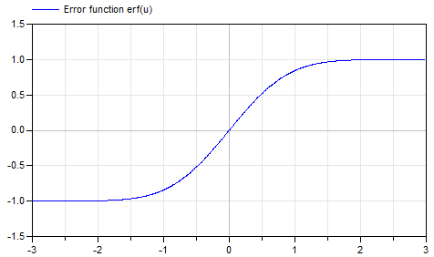
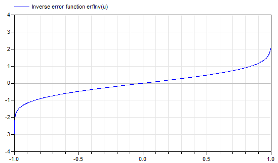

Library of special mathematical functions
This sublibrary contains functions to compute often used mathematical operators that cannot be expressed analytically.
Extends from Modelica.Icons.Package (Icon for standard packages).
| Name | Description |
|---|---|
| Error function erf(u) = 2/sqrt(pi)*Integral_0_u exp(-t^2)*d | |
| Complementary error function erfc(u) = 1 - erf(u) | |
| Inverse error function: u = erf(erfInv(u)) | |
| Inverse complementary error function: u = erfc(erfcInv(u)) | |
| Unnormalized sinc function: sinc(u) = sin(u)/u | |
| Internal utility functions that should not be directly utilized by the user |
 Modelica.Math.Special.erf
Modelica.Math.Special.erfError function erf(u) = 2/sqrt(pi)*Integral_0_u exp(-t^2)*d
Special.erf(u);
This function computes the error function erf(u) = 2/sqrt(pi)*Integral_0_u exp(-t^2)*dt numerically with a relative precision of about 1e-15. The implementation utilizes the formulation of the Boost library (53-bit implementation of erf.hpp, developed by John Maddock). Plot of the function:

For more details, see Wikipedia.
erf(0) // = 0 erf(10) // = 1 erf(0.5) // = 0.520499877813047
Extends from Modelica.Icons.Function (Icon for functions).
| Name | Description |
|---|---|
| u | Input argument |
| Name | Description |
|---|---|
| y | = 2/sqrt(pi)*Integral_0_u exp(-t^2)*dt |
Modelica.Math.Special.erfcComplementary error function erfc(u) = 1 - erf(u)
Special.erfc(u);
This function computes the complementary error function erfc(u) = 1 - erf(u) with a relative precision of about 1e-15. The implementation utilizes the formulation of the Boost library (53-bit implementation of erf.hpp developed by John Maddock). Plot of the function:
If u is large and erf(u) is subtracted from 1.0, the result is not accurate. It is then better to use erfc(u). For more details, see Wikipedia.
erfc(0) // = 1 erfc(10) // = 0 erfc(0.5) // = 0.4795001221869534
Extends from Modelica.Icons.Function (Icon for functions).
| Name | Description |
|---|---|
| u | Input argument |
| Name | Description |
|---|---|
| y | = 1 - erf(u) |
Modelica.Math.Special.erfInvInverse error function: u = erf(erfInv(u))
Special.erfInv(u);
This function computes the inverse of the error function erf(u) = 2/sqrt(pi)*Integral_0_u exp(-t^2)*dt numerically with a relative precision of about 1e-15. Therefore, u = erf(erfInv(u)). Input argument u must be in the range (otherwise an assertion is raised):
-1 ≤ u ≤ 1
If u = 1, the function returns Modelica.Constants.inf.
If u = -1, the function returns -Modelica.Constants.inf
The implementation utilizes the formulation of the Boost library (erf_inv.hpp,
developed by John Maddock).
Plot of the function:

For more details, see Wikipedia.
erfInv(0) // = 0 erfInv(0.5) // = 0.4769362762044699 erfInv(0.999999) // = 3.458910737275499 erfInv(0.9999999999) // = 4.572824958544925
Extends from Modelica.Icons.Function (Icon for functions).
| Name | Description |
|---|---|
| u | Input argument in the range -1 <= u <= 1 |
| Name | Description |
|---|---|
| y | = inverse of error function |
Modelica.Math.Special.erfcInvInverse complementary error function: u = erfc(erfcInv(u))
Special.erfInv(u);
This function computes the inverse of the complementary error function erfc(u) = 1 - erf(u) with a relative precision of about 1e-15. Therefore, u = erfc(erfcInv(u)) and erfcInv(u) = erfInv(1 - u). Input argument u must be in the range (otherwise an assertion is raised):
0 ≤ u ≤ 2
If u = 2, the function returns -Modelica.Constants.inf.
If u = 0, the function returns Modelica.Constants.inf
The implementation utilizes the formulation of the Boost library (erf_inv.hpp,
developed by John Maddock).
Plot of the function:
For more details, see Wikipedia.
erfcInv(1) // = 0 erfcInv(0.5) // = 0.4769362762044699 erfInv(1.999999) // = -3.4589107372909473
Extends from Modelica.Icons.Function (Icon for functions).
| Name | Description |
|---|---|
| u | Input argument |
| Name | Description |
|---|---|
| y | erfcInv(u) |
Modelica.Math.Special.sincUnnormalized sinc function: sinc(u) = sin(u)/u
Special.sinc(u);
This function computes the unnormalized sinc function sinc(u) = sin(u)/u. The implementation utilizes a Taylor series approximation for small values of u. Plot of the function:
For more details, see Wikipedia.
sinc(0) // = 1 sinc(3) // = 0.0470400026866224
Extends from Modelica.Icons.Function (Icon for functions).
| Name | Description |
|---|---|
| u | Input argument |
| Name | Description |
|---|---|
| y | = sinc(u) = sin(u)/u |